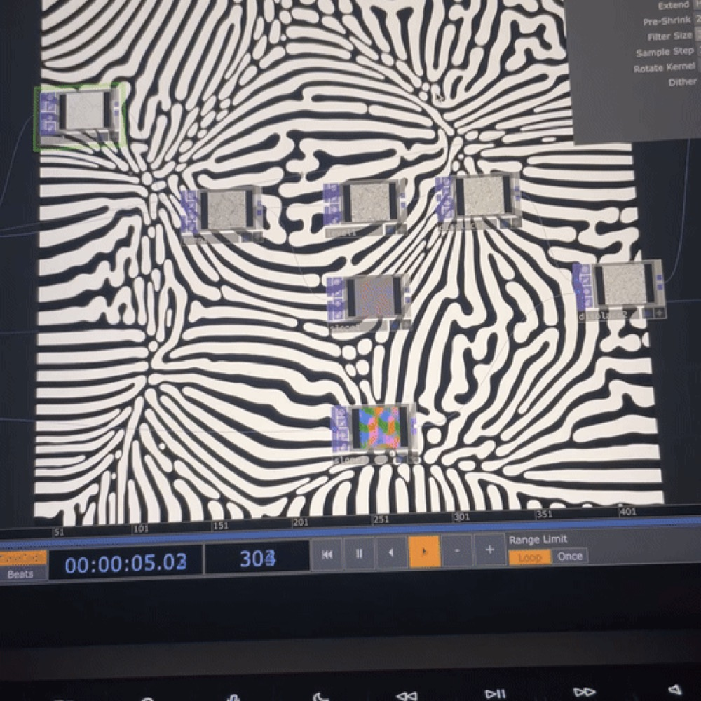
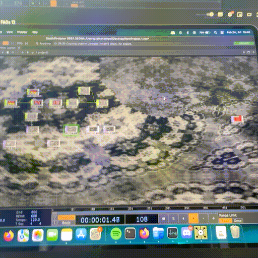
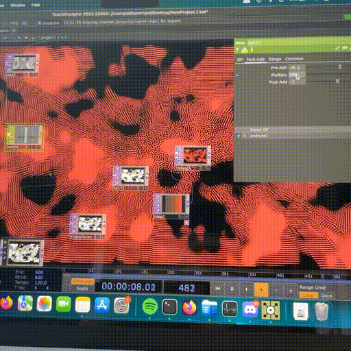
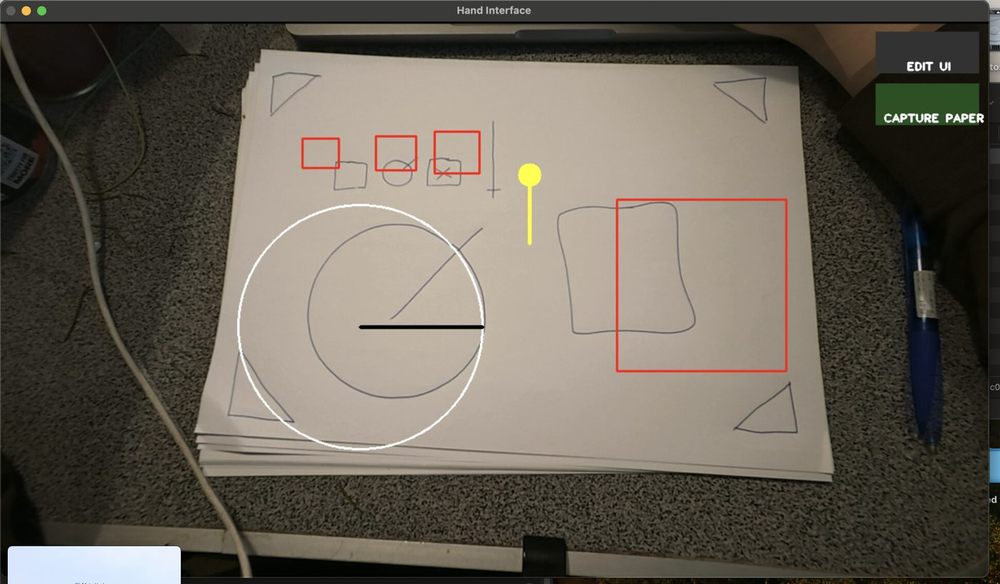
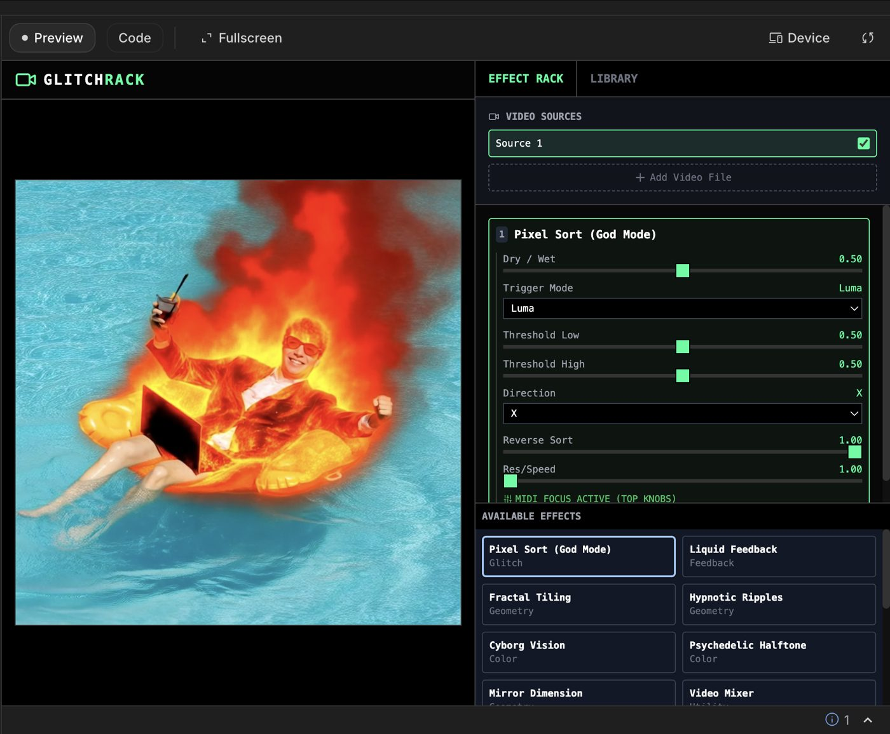

Creative
Alongside robotics I work on concert visuals, video and AI tools for artists. I've edited video for about ten years (Adobe suite, DaVinci Resolve) and also work with TouchDesigner, Blender and Gaussian splatting.
Stage visuals


TouchDesigner



Creative tech
Draw MIDI
Draw buttons, sliders and knobs on paper and play them as a MIDI controller. Gemini maps the sketch to controls, MediaPipe tracks your hand, and pinch gestures send MIDI CC to your DAW.


Glitchrack
A real-time video glitch rack: stack effects like pixel sort, liquid feedback and time scan, and play them live from a MIDI controller.

- Hand Splat LabGaussian splats played with hands and MIDI
- Camera Moves MakerCamera moves from a prompt or a preset
- Dialpad integrationsLogitech MX dialpad for creative apps